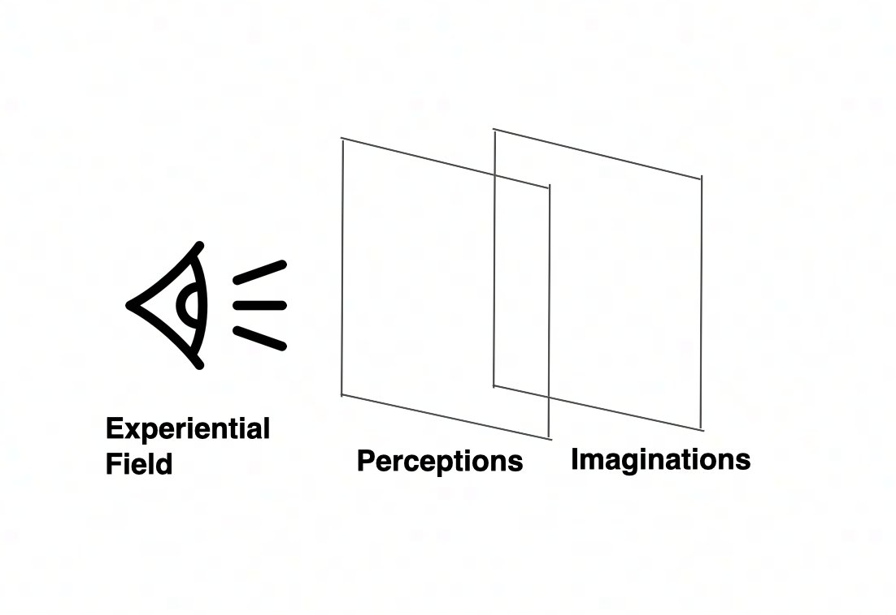
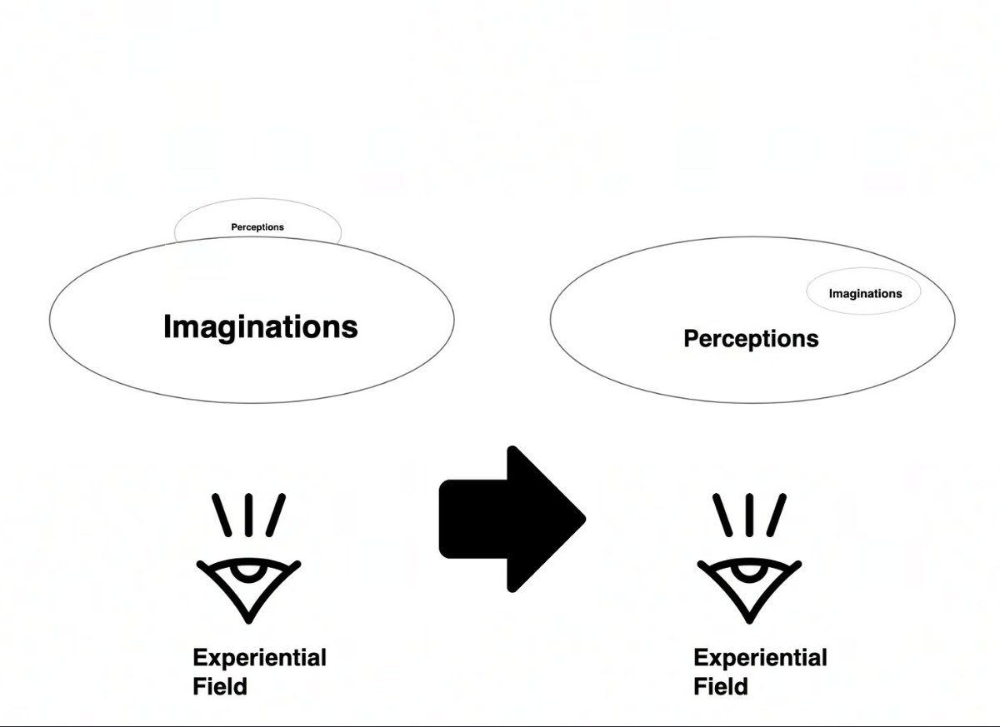
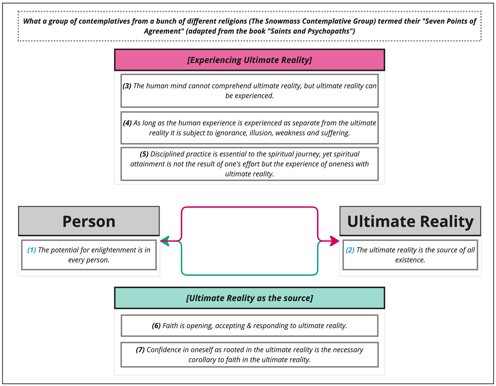
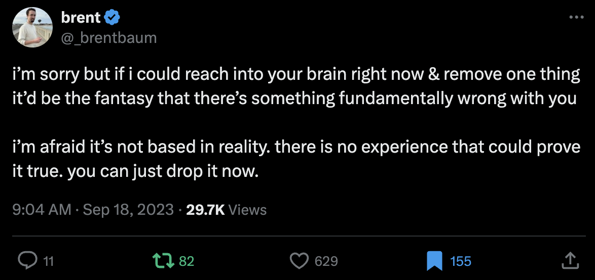

From my substack post “consensus-ism part 2”
Describing stuff that I experienced
Layer 1 is the core, foundational layer of experience. It’s made up of your senses, your vision, sounds etc, and also your bodily awareness, the feelings of excitement or fear or nervousness etc, and also of “primary thoughts”, as it’s not that I’ve stopped thinking, but I feel like I only have genuine thoughts rather than the self-referential, like, “thinking about thinking” thoughts in reaction to my core thoughts.
And then layer 2 is the mind’s reaction to layer 1. So like, my core lived experience (layer 1) at the dinner table was of not having anything to say in that moment, and of not wanting to say anything. And then layer 2 would take that and go “WOAH BUDDY DOES THIS MEAN XYZ???”.
So that’s what was going on when I wrote part 1 - I was much better at noticing my consensus, but still had a lot of anxiety about following my consensus, like “oh I don’t want to socialise at the intentional community tonight, I have no desire to, I want to rest (cool, layer 1, real shit) → “OH NO IS THAT OK DOES THAT MEAN I’M REALLY DISAGREEABLE EEEE AAAAA” (layer 2).
I mean, that’s a pretty dramatic example, a more lowkey one would be like “it’s a Saturday, I feel like going for a walk → eeeee but what about xyz other options”.
Layer 1 contains
- Unfakeable, unquestionable things (that are part of Ultimate Reality), for example:
- Consonance (AKA consensus)
- Dissonance
- First Dart feelings
- Sensations → sight, sounds, the world, etc. Heidegger’s like “being in the world” thing. The reality you’re enmeshed in
Diagrams
The two layers
- From Guy (@nosilverv) - sensations vs imaginations model

- Perceptions = layer 1. The ultimate part of reality
- Imaginations = layer 2. The part that you make up
Which layer you foreground
- By default, we foreground Layer 2 (imaginations) - we’re lost in our own abstractions, worries, Second Dart feelings, etc. Confusing yourself with language
- We’re of course aware of layer 1, it’s always there, but we’re seeing it through the haze of our own worries and thoughts, it’s like there’s a separation between us-as-a-self and the-world-out-there
- But, this can shift, and you can foreground Ultimate Reality, realising that the imaginations are optional extras:

- (Layer 2 being foregrounded to layer 1 being foregrounded)
- (From imagination-foregrounding life to perceptions-foregrounding)
The Seven Points of Agreement
- Re: “Ultimate Reality”, and the profundity of experiencing it in its pure form, being a core part of religion & spiritual/mystical experience (From the book Saints and Psychopaths):

Appendix re: Ultimate Reality (layer 1)
Ultimate Reality → Sasha Chapin
- Loving Awareness as Anti-Meme (Substack)
There’s a fascinating monotony to the world’s mystical traditions. Everyone sees the same thing if they squint at their consciousness long enough.
“Many paths lead from the foot of the mountain, but at the peak we all gaze at the single bright moon.”
Also everyone loves this. It’s everyone’s favorite. To everyone this feels really good, nice, like a vacation from a lot of your worries, an invitation to be compassionate to others, appreciate both sameness and difference, and other good stuff, bliss, a lot of feelings people try to obtain at great expense through other means—gustatory, pharmacological, commercial, and so on.
- Befriending the void (Substack)
Ultimate reality doesn’t contain this thought:

Experiencing pure layer 1 → deep okayness
- Alex’s substack → “Consensus-ism part 2 (Something like Deep Okayness has happened to me and I like it)“. It’s a good post sir
It’s subtractive, not additive
- Having an experience where you drop layer 2 entirely, and you’re like “woah, wtf, I didn’t need it?”
- Sasha Chapin, from “Enlightenment: A personal note on a confusing subject”
Similarly, you’d heard about mystical experiences for a long time, things about oneness or a Supreme Reality or similar, and they seemed analogous to some stuff you’d been through. Then, you touch the State, and you go like, what the fuck, this has always been here, this whole time?
It feels like you have been given a glimpse of a greater reality. But what does that reality have to teach you? Unless you become extremely fond of one or another mystical tradition’s beliefs, it’s hard to say. Perhaps what you have glimpsed is simply a barer sensate consciousness, freed of some of the interpretive processing that makes normal thinky consciousness stressful. Perhaps what you have glimpsed is the thing people call God, and now you know that this thing is the foundation of everything you are, with a few layers of costume on top. In the end, you really want to interpret it definitively, but it evades interpretation. You are comforted by the memory of the State, but, in the end, puzzled, too. Maybe you feel Better deep down, in a way that’s hard to define, but sometimes, months later, you doubt whether this is still true.
Appendix
- I’ve since learned (2026-02-14) that Advaita Vedanta has a 3-level model, which is very close to mine, but with Brahman (oneness, awareness (?)) being layer 1, and the empirical world that we all share (E.g. we both see the same mug in the same room) being layer 2, and imaginations/misperceptions in layer 3. So I smushed 1 and 2 of Advaita Vedanta into my layer 1